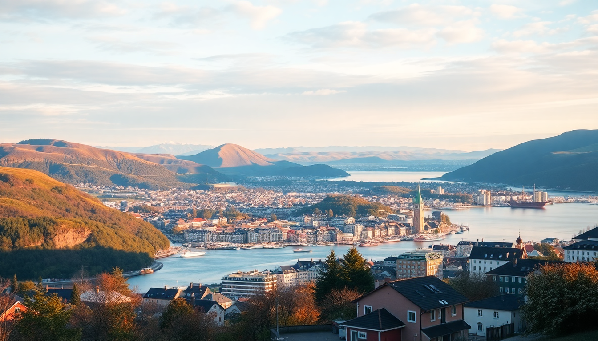

Best Time to Visit Norway: Month-by-Month Guide for 2025

I spent three years bouncing between Oslo, Bergen, Tromsø, and the Lofoten Islands across every season, and the short answer is: there is no single "best" month — it depends entirely on whether you want midnight sun, northern lights, empty fjords, or cheap hotels. This guide breaks down each month for 2025 so you can pick the timing that actually fits your trip, not a postcard.
When is the best time for northern lights in Norway?
For aurora hunting, target late September through late March, but the sweet spot is October through February in Tromsø. I saw the clearest skies in mid-November, when the city’s light pollution is low and the fjords block less of the horizon.
- Tromsø: Base yourself at Clarion Hotel The Edge — it’s walkable to the harbour and has a rooftop bar for aurora spotting without freezing.
- Lofoten: Rent a cabin in Reine or Hamnøy; the mountains frame the lights perfectly. Avoid full moon weeks (check a lunar calendar) — the glow washes out the green.
- Oslo and Bergen: Northern lights are rare here due to coastal clouds and city lights. Don’t plan a trip around them south of Trondheim.
When is the best time for midnight sun?
The midnight sun runs from mid-May to late July above the Arctic Circle. June is the most reliable month — clear skies in Tromsø and Lofoten happen roughly 60% of days, versus 40% in May.
- Tromsø: Hike Mount Storsteinen via the Fjellheisen cable car at 11 PM. The sun sits just above the horizon, casting long shadows.
- Lofoten: Kayak in Trollfjorden around midnight. The light is golden, not harsh, and the water is glassy.
- Bergen and Oslo: You’ll get long daylight (18+ hours in Oslo by late June) but no midnight sun. Sunset at 10:30 PM in Bergen still feels surreal.
What is the weather like month-by month in 2025?
I’ll keep this blunt: Norway’s weather changes fast, and forecasts past three days are useless. Here’s what you’ll actually experience each month.
January: Oslo averages -6°C, but feels colder with wind. Tromsø hovers around -4°C with constant snow. Lofoten is milder (0°C to 2°C) but rainy. Good month for northern lights and cheap flights.
February: Similar to January, but days lengthen. In Tromsø, the sun returns around the 20th. Ski resorts like Kvitfjell (north of Oslo) have peak conditions.
March: Winter still grips the north, but Oslo thaws to 2°C-5°C. Lofoten sees snowmelt and slush. Northern lights still strong. I’d skip Bergen in March — it’s the rainiest month (18+ rainy days).
April: Shoulder season. Oslo hits 8°C, but rain is constant. Tromsø feels like a wet March. Lofoten roads are icy and many hiking trails closed. Only visit if you want empty museums and half-price hotels.
May: Real spring arrives. Oslo hits 15°C, cherry blossoms bloom at Vigelandsparken. Bergen still wet but tolerable. Lofoten and Tromsø thaw, but mosquitoes haven’t hatched yet. My pick for a budget trip with decent weather.
June: Peak midnight sun in the north. Oslo and Bergen get 18+ hours of daylight. Temperatures: Oslo 20°C, Bergen 16°C, Tromsø 12°C. Lofoten is perfect for hiking — trails like Ryten near Kvalvika Beach are dry by mid-June.
July: Warmest month nationwide. Oslo can hit 28°C. Bergen still rains every other day. Tromsø and Lofoten average 15°C. Crowds peak — book hotels six months ahead. The Hurtigruten ferry from Bergen to Kirkenes is fully booked by April.
August: Similar to July but slightly cooler and less crowded after the 15th. Lofoten water is warm enough for swimming (12°C — brave, I know). Great month for hiking in Jotunheimen National Park near Oslo.
September: Autumn colours in Lofoten and Tromsø. Northern lights return late in the month. Oslo and Bergen are still pleasant (15°C). Crowds vanish. I stayed at Thon Hotel Rosenkrantz in Bergen for half the July price.
October: Rainy and dark. Tromsø gets 8 hours of daylight. Lofoten is grey. Oslo is chilly (8°C). Northern lights are active, but clouds often block them. Only go if you’re aurora-obsessed and flexible with plans.
November: Dark, cold, wet. Tromsø gets 3 hours of weak daylight. Lofoten is stormy. Oslo is 2°C with sleet. Cheap flights and empty hotels, but honestly, I’d skip unless you’re chasing a specific winter photography shot.
December: Christmas markets in Oslo (Spikersuppa ice rink) and Bergen (Bryggen). Tromsø is dark but magical under snow. Lofoten is harsh — roads close, ferries cancel. Northern lights peak, but so does cloud cover.
Which cities and regions should I prioritize each month?
- Oslo: Best in May-September. Summer is warm, parks are lively. Winter is grey and cold unless you ski at Holmenkollen.
- Bergen: Visit June-August. The rest of the year is rain-soaked. The Fløibanen funicular is worth it even in mist, but skip the Fish Market — it’s overpriced tourist bait.
- Tromsø: October-February for lights, June-July for midnight sun. Avoid April and November — they’re transitional slush months with nothing special.
- Lofoten: June-August for hiking and kayaking, September for autumn colours and fewer crowds. Winter is harsh but stunning for photography if you can handle 4 hours of daylight.
What about costs and crowds in 2025?
Norway is expensive year-round, but you can save by timing. I’ve found these patterns consistent.
- High season (June-August): Hotels in Oslo and Bergen cost 2000-3000 NOK/night. Lofoten cabins book out by February. SAS and Norwegian Air flights from the US or UK double in price.
- Shoulder season (May, September): Prices drop 30-40%. I booked Moxy Bergen for 1200 NOK/night in late May. Crowds are thin at Geirangerfjord and Preikestolen.
- Low season (October-April): Hotels under 1000 NOK/night in cities. But many Lofoten attractions close, and ferry schedules shrink. Tromsø is the exception — aurora tourism keeps prices moderate.
FAQ
Is Norway worth visiting in winter? Yes, if you want northern lights, snow activities, or empty cities. Tromsø and Lofoten are magical under snow. But expect short days (3-6 hours of light), icy roads, and cancelled ferries. Oslo and Bergen feel dreary — I’d limit winter trips to the north.
What is the cheapest month to fly to Norway? February and November, based on 2024 data from Oslo Gardermoen. Flights from London to Oslo dropped to £40 round-trip in February 2024. Hotels are cheap too, but you’ll pay for activities like dog sledding or aurora tours.
Can I see both northern lights and midnight sun in one trip? No — they’re opposite seasons. Northern lights require darkness (September-March), midnight sun requires perpetual daylight (May-July). To see both, you’d need a year-long stay. Pick one based on your priority.
Conclusion
- For northern lights: Visit Tromsø or Lofoten in October-February. Avoid full moon weeks.
- For midnight sun: June in Tromsø or Lofoten. Book accommodation by January.
- For hiking and fjords: May-September in Oslo, Bergen, or Lofoten. September is the sweet spot for fewer crowds.
- For budget travel: May or September. Shoulder season gives decent weather at half the price.
- For Christmas markets: Oslo and Bergen in December. Tromsø is dark but charming. Lofoten is too risky with road closures.